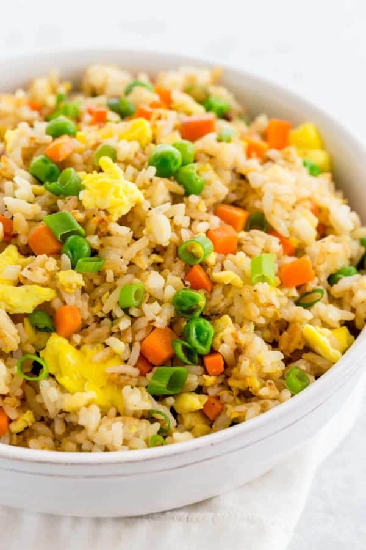

Easy Fried Rice
Fried rice ingredients
- White rice, jasmine or long-grain; fresh or leftover
- Minced white onion
- Diced carrots
- Green peas, fresh or frozen (avoid canned; too mushy)
- Toasted sesame oil
- Eggs whisked
- Soy sauce
- Salt and white pepper (spicy flavor and adds no color to the dish)
How to make it?
- Fry the rice by lightly browning in a pan or wok.
- Stir-fry the onions, garlic, and carrots until tender.
- Make a large well in the center of the pan with the rice.
- Pour in the whisked eggs and scramble until small curds form.
- Soy sauce is optional but adds a savory flavor to the rice.
- Add green peas at the end to retain color and shape.
Check it out here😘